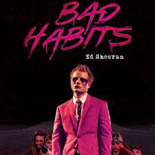
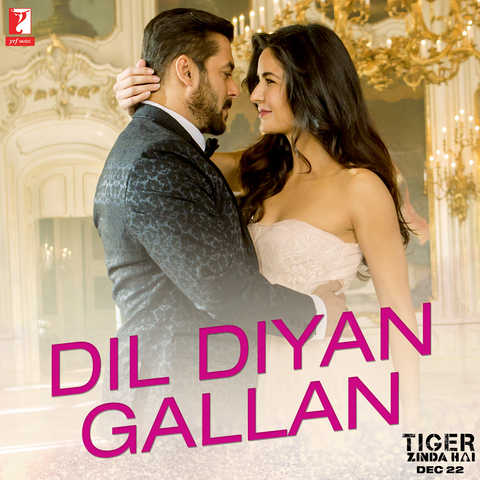

Arjit Singh
Singer
Arijit Singh (born 25 April 1987) is an Indian singer and music
composer.He sings predominantly in Hindi and Bengali, but has also
performed in various other Indian languages.He is the recipient of a
National Award and a record six Filmfare Awards. He is often cited
as one of the best singers in the Indian and Pakistani music
industries, and has established a huge fan base throughout South
Asia. He is also known as the "King of Playback Singing"
11 Tracks | 111 Albums
01

Bad Habits
Zyan Malik
02

Mistakes
Tove Styrke
03

Dil Diyan
Salman Khan
04

Kabira
Mohit